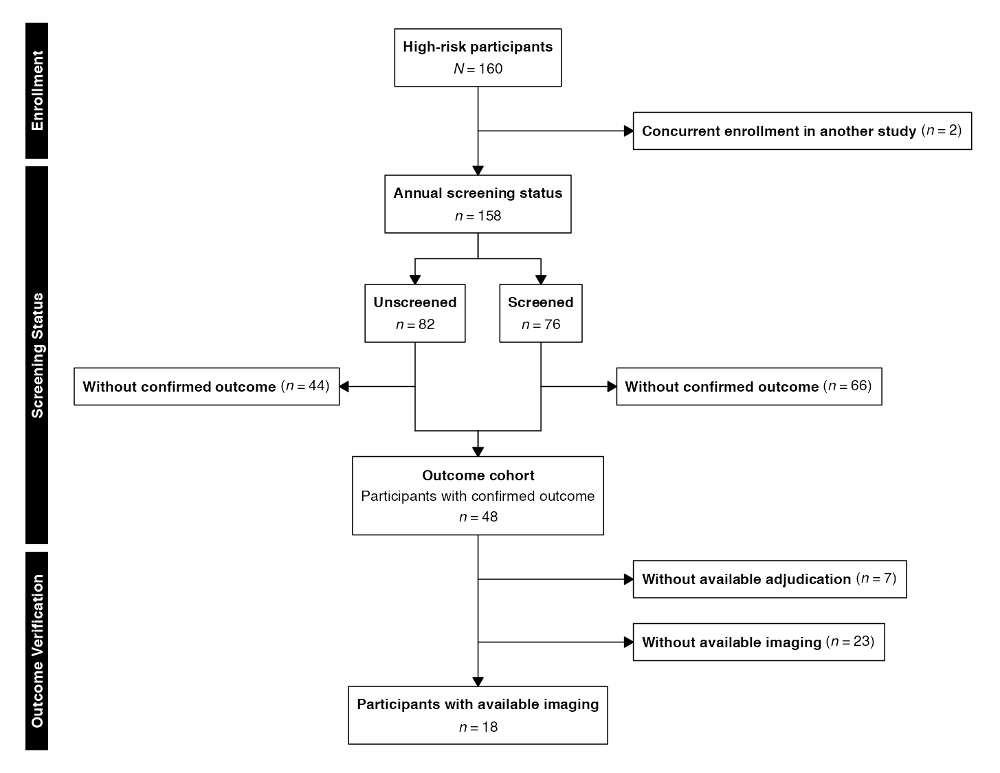
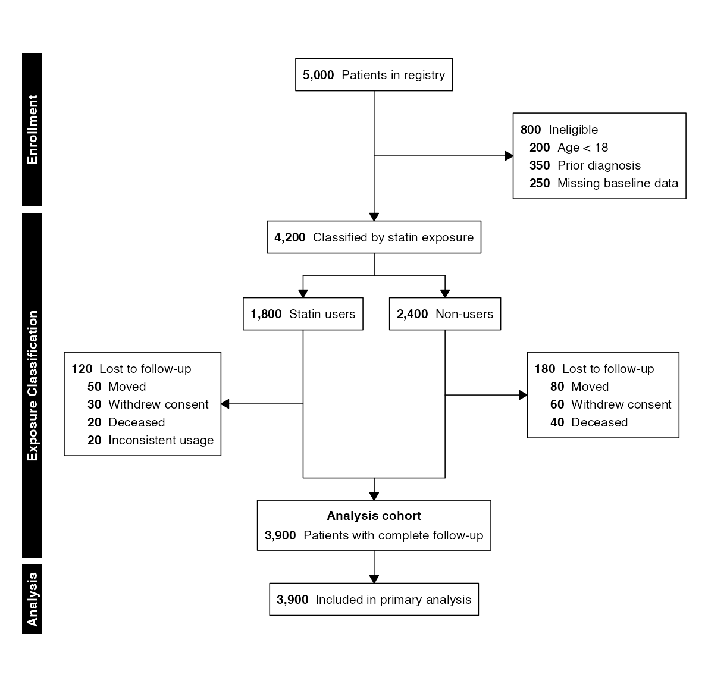
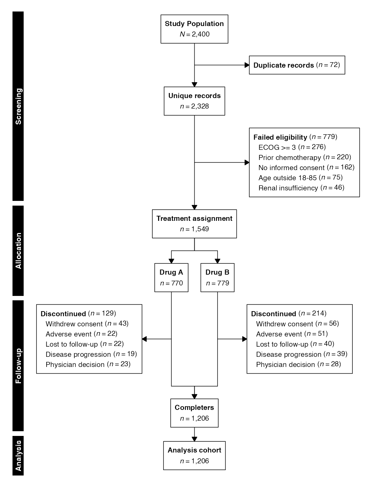

Many clinical studies divide a population into strata for independent
characterization, then recombine those strata into a single cohort for
downstream analysis. This split-and-recombine pattern arises in
screening validation studies, exposure-stratified observational cohorts,
and adaptive trial designs that classify patients before randomization.
It represents a third flow topology in selecta, distinct
from both permanent parallel arms (e.g., CONSORT/STROBE/STARD
diagrams) and top-level source convergence (e.g., PRISMA/MOOSE
diagrams).
In selecta, split-and-recombine diagrams are built
around the following core functions:
| Function | Purpose |
|---|---|
enroll() |
Establish the starting cohort from data or a manual count |
stratify() |
Divide the flow into parallel strata |
combine() |
Merge strata back into a single downstream flow |
Thus, the split-and-recombine pipeline adheres to the following basic structure:
enroll(...) |>
exclude(...) |>
stratify(labels, n, label) |>
exclude(...) |>
combine(label, sublabel) |>
exclude(...) |>
endpoint(label) |>
flowchart()where stratify() fans out to parallel arms and
combine() converges arms back together. Between the split
and the recombination, exclude() calls apply independently
within each stratum, producing per-stratum side boxes.
n.b.: To ensure correct font rendering and figure sizing, the diagrams below are displayed using a vignette-only helper function (
queue_flow()) that applies recommended dimensions fromrecdims()via theragggraphics device, with the standard output function applied afterwards (flowchart()). In practice, replace thisqueue_flow()/flowchart()workflow with a call toflowsave()for equivalent printed results:Using
flowsave()ensures that the figure dimensions are always large enough to accommodate the diagram content, and it is the preferred method for saving flow diagram outputs inselecta.
Manual Entry
Example 1: Screening Validation Study
In screening-validation studies, a high-risk population is stratified by whether participants received an annual screening protocol. The strata are then characterized independently with respect to outcomes of interest, after which they are recombined into a single confirmed cohort for downstream analysis:
example1 <- enroll(n = 160,
label = "High-risk participants") |>
phase("Enrollment") |>
exclude("Concurrent enrollment in another study", n = 2,
included_label = "Total cohort") |>
phase("Screening Status") |>
stratify(
labels = c("Unscreened", "Screened"),
n = c(82, 76),
label = "Annual screening status"
) |>
exclude("Without confirmed outcome", n = c(44, 66)) |>
combine("Outcome cohort",
sublabel = "Participants with confirmed outcome") |>
phase("Outcome Verification") |>
exclude("Without available adjudication", n = 7) |>
exclude("Without available imaging", n = 23) |>
endpoint("Participants with available imaging")
flowchart(example1)
The stratify() function creates the downward split, and
combine() draws converging arrows from each stratum back to
a single node. Between the two, exclude() is called once
with a vector of per-stratum counts (n = c(44, 66)),
producing one side box per column. In combine(), the
sublabel parameter writes a descriptive second line below
the main heading inside the recombined node, and the flow continues as a
single stream with standard exclusion steps.
Example 2: Per-Stratum Exclusion Reasons
When per-stratum attrition has distinct causes, the
reasons argument accepts a list of named vectors (one per
stratum). Reason ordering is harmonized across strata using global
totals, consistent with the behavior of per-arm reasons after
allocate():
example2 <- enroll(n = 5000, label = "Patients in registry") |>
phase("Enrollment") |>
exclude("Ineligible", n = 800,
reasons = c("Age < 18" = 200,
"Prior diagnosis" = 350,
"Missing baseline data" = 250),
included_label = "Eligible cohort") |>
phase("Exposure Classification") |>
stratify(
labels = c("Statin users", "Non-users"),
n = c(1800, 2400),
label = "Classified by statin exposure"
) |>
exclude("Lost to follow-up", n = c(120, 180),
reasons = list(
c("Moved" = 50, "Withdrew consent" = 30, "Deceased" = 20, "Inconsistent usage" = 20),
c("Moved" = 80, "Withdrew consent" = 60, "Deceased" = 40)
)) |>
combine("Analysis cohort",
sublabel = "Patients with complete follow-up") |>
phase("Analysis") |>
endpoint("Included in primary analysis")
flowchart(example2, count_first = TRUE)
Data-Driven Flow
In data mode, stratify() accepts a column name rather
than explicit labels and counts. The combine() function
recombines the per-stratum datasets internally, and
cohort() returns the unified post-recombination
dataset.
Example 3: Data-Driven Split and Recombine
The following example uses the selectaex2 dataset,
stratifying by treatment assignment and recombining after documenting
per-arm discontinuation:
example3 <- enroll(selectaex2, id = "patient_id") |>
phase("Screening") |>
exclude("Duplicate records", criterion = is_duplicate == TRUE,
included_label = "Unique records") |>
exclude("Failed eligibility", criterion = eligible == FALSE,
reasons = "exclusion_reason",
included_label = "Eligible cohort") |>
phase("Allocation") |>
stratify("treatment", label = "Treatment assignment") |>
phase("Follow-up") |>
exclude("Discontinued", criterion = discontinued == TRUE,
reasons = "discontinuation_reason") |>
combine("Completers") |>
phase("Analysis") |>
endpoint("Analysis cohort")
flowchart(example3)
Cohort Extraction
The cohort() and cohorts() functions work
with split-and-recombine flows. After a combine() step,
cohort() returns the unified recombined dataset rather than
a per-arm list:
The cohorts() function captures snapshots at every
stage, including the combine point. Each snapshot records the remaining
and excluded datasets:
stages <- cohorts(example3)
names(stages)
#> [1] "_start" "Duplicate records" "Failed eligibility" "_arm" "Discontinued" "Completers" "Analysis cohort"The combine snapshot contains the recombined dataset:
nrow(stages[["Completers"]]$included)
#> [1] 1206Per-arm snapshots from the stratified region are available at the exclusion step labels. These contain named lists (one element per arm) rather than single datasets:
disc <- stages[["Discontinued"]]
vapply(disc$included, nrow, integer(1L))
#> Drug A Drug B
#> 641 565
vapply(disc$excluded, nrow, integer(1L))
#> Drug A Drug B
#> 129 214This supports a complete analytical workflow: define the enrollment flow, render the diagram, and extract any intermediate or final cohort for downstream analysis.
Re-Splitting after Recombination
A flow may be split, recombined, and then split again. This arises in
adaptive designs where patients are first characterized by a baseline
variable, recombined, and then randomized. The stratify()
function permits a second split after combine() has closed
the first:
Example 4: Risk Stratification Followed by Randomization
example4 <- enroll(n = 2000, label = "Screened") |>
phase("Screening") |>
exclude("Ineligible", n = 400,
reasons = c("No consent" = 180, "Prior treatment" = 120,
"ECOG >= 3" = 100)) |>
phase("Risk Stratification") |>
stratify(
labels = c("High risk", "Low risk"),
n = c(700, 900),
label = "Risk classification"
) |>
exclude("Declined participation", n = c(50, 80)) |>
combine("Eligible cohort") |>
phase("Allocation") |>
allocate(labels = c("Intervention", "Control"),
n = c(735, 735)) |>
phase("Follow-up") |>
exclude("Lost to follow-up", n = c(30, 35),
reasons = list(
c("Withdrew consent" = 18, "Relocated" = 12),
c("Withdrew consent" = 20, "Relocated" = 15)
)) |>
phase("Analysis") |>
endpoint("Analyzed")
flowchart(example4)
The layout engine scopes each split-combine span independently, so
the converge arrows from the first split do not interfere with the
second split’s arm positions. The second split may use either
stratify() (for observational grouping) or
allocate() (for randomization); both are permitted after a
prior combine().
Design Considerations
The split-and-recombine topology works well for two-stratum splits with or without per-stratum side boxes. For three or more strata, flowcharts will similarly render without collisions or overlap, but any per-stratum side boxes may produce asymmetry due to the geometric limitations of the split-and-recombine flow. In such cases, consider simplifying the per-stratum detail or using external graphics editing software for full control over the layout.
Saving to File
The flowsave() function saves the diagram to a file
(PDF, PNG, SVG, or TIFF) with auto-computed dimensions:
flowsave(example1, "screening_validation.pdf")
flowsave(example1, "screening_validation.png", dpi = 300)Explicit dimensions override the automatic calculation:
flowsave(example1, "screening_validation.pdf", width = 10, height = 12)All visual parameters accepted by flowchart() are also
accepted by flowsave():
flowsave(example1, "screening_validation_cf.pdf",
count_first = TRUE, cex = 1.0, cex_side = 0.8)Further Reading
- Enrollment Diagrams: CONSORT, STROBE, and STARD diagrams with permanent parallel arms
- Systematic Reviews: PRISMA and MOOSE diagrams with top-level source convergence
- Advanced Workflows: Factorial (nested-split) designs and hierarchical exclusion reasons
- Graphviz Export: DOT output for Graphviz/DiagrammeR rendering